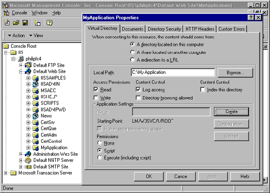
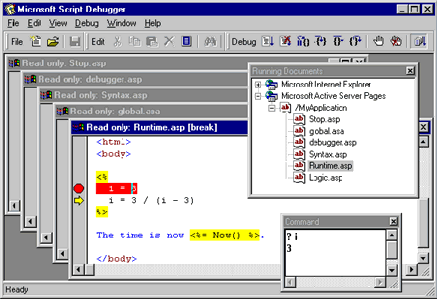

|
| ||
|
| ||
Philip Carmichael
Program Manager, Microsoft Corporation
October 10, 1997
Contents
Introduction
Successfully Enabling Debugging
Debugging Tips
Internet Information Server (IIS) 4.0 now enables you to debug the Global.asa file, .asp files, .cdx files, and ActiveX™ components written in Java. With IIS 3.0, debugging usually meant typing in Response.Write statements, which would send the necessary information to the browser to determine scripting errors. Using the new Microsoft Script Debugger  , which ships with IIS 4.0 and Internet Explorer 4.0, it is possible to debug client-side and server-side scripts. This article outlines what you need to know to start using the debugger with Active Server Pages (ASP).
, which ships with IIS 4.0 and Internet Explorer 4.0, it is possible to debug client-side and server-side scripts. This article outlines what you need to know to start using the debugger with Active Server Pages (ASP).
ASP requires an application (a virtual directory marked as an application) to support debugging, which means that you must create an application to enable debugging. Creating an application also has the nice side effect of instructing ASP on where the Global.asa file exists and setting up an entry point for your application.
To create an application, you need to create a new virtual directory in the IIS Management Console:

Figure 1. Creating a virtual directory in the IIS Management Console
To maximize performance, debugging is not enabled by default for ASP-based applications. Never enable debugging for an application in production, that is, a site being used by others.
Now that you are set up to debug, here are some useful debugging methods:

Figure 2. Microsoft Script Debugger
Sometimes when you set a breakpoint in an HTML file, multiple lines are highlighted by the debugger. This is because these lines are sent to the browser as a single block by ASP, which is done to increase performance. To debug an include file you can use Step Into or you can expand an .asp file node that contains an include and set a breakpoint.
Using Step Into through an .asp file is useful, but you should also know how to display and set values using the Command window. If the Command window is not already displaying in the Script Debugger, select Command window from the View menu. In this window you can do things like display values using script. If your current script language is Visual Basic® Scripting Edition (VBScript), you can type "? variablename", or "? object.propertyname". In JScript™, you need only type the variable name or "object.propertyname" and press ENTER. The value is then displayed. To set a value, use an assignment statement such as x = 1 or y = 2. In VBScript, you can also use:
Set myObj = Server.CreateObject("someobject")
In JScript, an object assignment statement is just like any other:
myObj = Server.CreateObject("someobject")
The Global.asa file was difficult to debug before, but now you can debug any of the three events: Application_OnStart, Session_OnStart, and Session_OnEnd. I find it easiest to edit the Global.asa file and type a Stop statement (for VBScript) or debugger statement (for JScript) in either the Application_OnStart or Session_OnStart events. By the time the Global.asa and requested .asp file appear in the Running Documents window, they have already been run once, and it is too late to debug the Application_OnStart event because it has already occurred. Also, the Session_OnStart event has already been run for the user's browser. However, setting breakpoints can be convenient for Session_OnEnd because it doesn't execute until later.
Debugging an out-of-process application is just like debugging an in-process application. If you have selected the Run in separate memory space (isolated process) check box, your .asp files and the components they call will be run in a process other than the IIS 4.0 process. To find the application in the Running Documents window, you can expand each entry for Active Server Pages. A more technical approach would be to determine the process ID for the application and find the Active Server Pages entry in the Running Documents window that has the corresponding process ID. Expand the entry by adding the process ID in parentheses, as a suffix.
The Script Debugger is read-only, so you will have to use an editor to make changes to Global.asa, .asp, and .cdx files that you want to modify as a result of debugging.
Using the new Script Debugger can save you a lot of time. Whether a compiler, run-time, or logic error occurs, the debugger can show you exactly what is occurring. The Command window can assist in determining, for example, just what the value of some variable really is. And, most importantly, once you are finished debugging, always remember to turn this feature off. It limits an application to process requests singly, and the application is no longer concurrent.
Peer support is available through the Script Debugger newsgroup on msnews.microsoft.com: microsoft.public.inetsdk.programming.scripting.debugger.
In the next IIS debugging article for MSDN Online Web Workshop, I will write about how to debug an ActiveX component written in Java. Stay tuned!
Author Philip Carmichael is the IIS team's Program Manager dedicated to ASP features and design, including debugging and the addition of new components.
Did you find this material useful? Gripes? Compliments? Suggestions for other articles? Write us!
© 1999 Microsoft Corporation. All rights reserved. Terms of use.